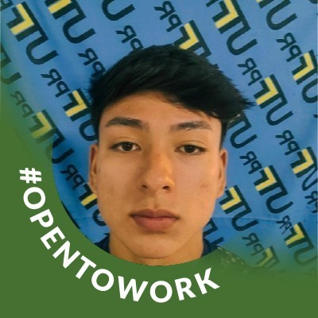

Java Games Hub
Sistema desenvolvido em Java contendo jogos como Bingo, Genius e Jogo da Memória, além de recursos de login e cadastro de usuários.

Estudante de Engenharia de Computação
Sou estudante de Engenharia de Computação da UTFPR, interessado em desenvolvimento de software, análise de dados e tecnologia. Busco oportunidades para desenvolver minhas habilidades técnicas e adquirir experiência profissional por meio de projetos e estágios.
ODS 4 - Educação de Qualidade. Como futuro profissional da área de tecnologia, pretendo contribuir para a democratização do acesso à educação por meio do desenvolvimento de soluções tecnológicas e projetos voltados ao aprendizado.
Sistema desenvolvido em Java contendo jogos como Bingo, Genius e Jogo da Memória, além de recursos de login e cadastro de usuários.
Projeto desenvolvido utilizando HTML, CSS e JavaScript, publicado através do GitHub Pages.